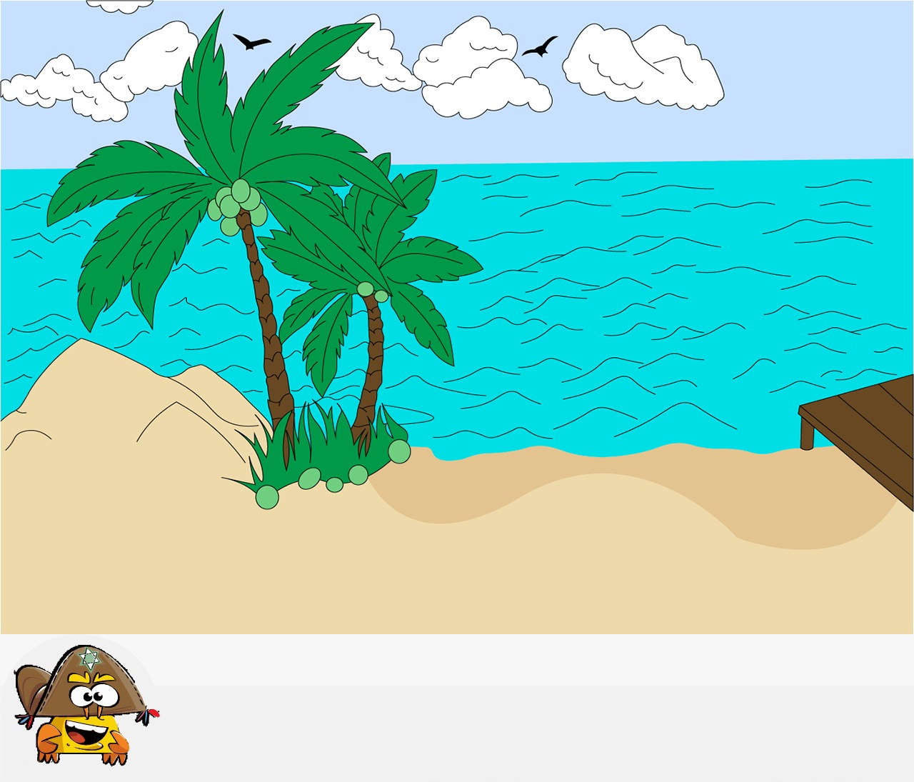

Aplicação

Recebemos a missão da ONG Estação Itinerante Ambiental de criar uma aplicação intuitiva com o foco no público infantil, em que elas se conscientizem da necessidade de descartar o lixo corretamente.
Então, criamos uma aplicação web em que a criança utilizaria o mouse para jogar o lixo no local indicado com algumas instruções do Zé do Mangue (um caranguejo que ajuda a criança nesta missão).
Confira algumas artes da aplicação.